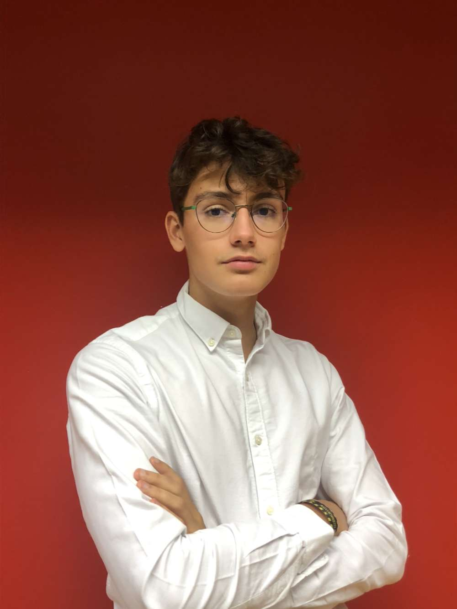

Hi, I'm Timothée
Bonjour je m'appelle Timothée, Je suis étudiant en 1ère année à l'IESEG School of management sur le campus de Lille. J'aime le sport, la randonnée, lire et me renseigner sur l'actualité, voyager et explorer des endroits inconnus avec ma tente, mes amis et mon sac à dos.
Discover my web sitePassions 🏃
Mes passions sont le tennis et la randonnée. J'ai pratiqué le tennis pendant 8 ans et fait beaucoup de compétitions. Quant à la randonée, j'ai la chance de pouvoir en faire durant les vacances d'été. Cela ma permis de developper mon mental et mes capacités physiques.
Travail ✍
J'ai pu travaillé en tant que préparateur et livreur de commande chez Intermarché pendant 1 mois. Par ailleurs, Je suis aussi serveur en loge VIP pour les matchs au LOSC Lille, où mon job est de guidé, servir et renseigner les gens. Concernant mes études, je me sens épanouie et intérréssé par les cours et projets semestriels proposés qui m'aident à developper un esprit de gestionnaire et de manager.
Expériences 🤵
En 2018, j'ai effectué un stage chez EXOTEST GROUP, laboratoire d’essai et de contrôles de pièces industrielles. En 2019, je suis partie durant 2 mois en Irlande au Lycée Carrigallen Vocational School et dans une famille d’accueil pour améliorer mon niveau d'anglais.Je participe souvent à des maraudes avec une association pour venir en aide au sans-abris. Pour finir, en Juillet 2021 j'ai réalisé un road trip entre amis en autostop à travers l'Europe centrale.